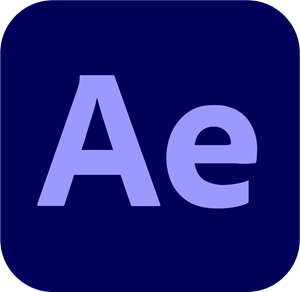
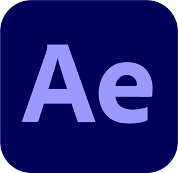

Introduction
The Happy Journey is an app that helps people to document progress and insights during their therapy journey, and to keep track of their homework in between sessions. This project was the final project for my bachelor’s degree Communication And Multimedia Design: my graduation project, which was graded with a 9/10.
For a more detailed overview of the process, please take a look at the Design Rationale (Dutch) For all steps that were taken during the process, I’d like to refer to the Product Biography (Dutch)
To add some brief background information: this project focused on people who are currently receiving therapy, or have received therapy in the past (later referred to as ‘clients’). More specifically, this project was focused around cognitive behavioral therapy (later referred to as ‘CBT’), which is a form of therapy that is very widely used, and aims to help people to understand their negative thoughts, behavioral patterns, and feelings, and to replace those with positive patterns. In between multiple therapy sessions, it’s common to have some homework assigned to finish before the next session.
The design challenge
The challenge was to help clients to get the most out of their therapy journey. People go to therapy for all kinds of reasons, and experience their own struggles during their treatment.
To give an example: some clients reported that they struggled to remember, plan and/or complete the homework they got in between sessions. This is, unfortunately, not very surprising, as concentration problems are a common symptom of common mental disorders (Hersenstichting, 2021a; Heeren & Verhey, 2007; Nederlands Huisartsen Genootschap, 2018).
Another thing that interested me a lot, was the ‘offboarding’ of the clients; how well are they able to keep up the good work and continue to make progress after they’ve completed their treatment?
To tackle the client’s struggles, I’ve formulated the following design challenge:
How can a digital interactive tool help people who are undergoing a CBT-treatment, so that the mental wellbeing and experience of the client is improved during and after the treatment?
The process
During the project, I teamed up with Lidwien Schweitzer, a project manager at Arkin (a mental health institute in the Netherlands). Lidwien helped me a lot by being a closely involved stakeholder with a strong affinity with e-health. This helped me to create a more accurate and well-informed concept and design.
As a student focusing on UX and Visual design, my aim was to create a research-based, tested, good-looking product. I applied several methods for my research, including:
- Benchmark creation: what kinds of digital mental health tools are currently available? What works, what doesn’t and how can my product distinguish itself from others?
- Literature study: because of mental health being both a sensitive and a thoroughly researched subject, it was essential to look for helpful (background) information from trustworthy sources.
- Interviewing clients, a psychologist and my main stakeholder: this helped a lot with guiding my project in the right direction. It was so interesting how each interview lead to new ideas for the project.
- Personality & Script: writing out the interactions as a script, and giving the product a personality helped a lot with determining the tone of voice and general vibe of the app.
- Assumption matrix: before conducting prototype tests, it is essential to look at any possible assumptions you’re falling prey to. I graded those based on impact and (un-)certainty, and placed them in a matrix. This helped a lot with determining what the user tests should be focused on.
- Prototype testing: I conducted several usability tests, and added an interview to all of the tests to gain more understanding of the clients. I also conducted a couple of online usability tests, using Useberry
- Peer reviews: I used my network and got some great feedback from my fellow peers.
For a detailed view of all the methods I applied during the project, I’d like to refer to the Product Biography (Dutch)
Important design decisions
My research led to a couple of interesting insights about the clients:
- Concentration issues, forgetfulness and fatigue are common symptoms in common mental illnesses;
- Making time /planning for the given homework is a challenge.
- Clients can feel overstimulated easily.
- Clients deem a friendly relationship with their therapist as important.
- Some clients already use their phone in some way to make their homework and to take notes during therapy sessions.
- Some clients mentioned that they used their prescribed e-health product “because they have to.”
To address these challenges, I made the following design decisions:
Calm design
To address the concentration issues, forgetfulness, fatigue and overstimulation, it was essential to create a product that had a calm vibe and that didn't overstimulate, by utilizing the 'one main function per screen' method, and by using progressive disclosure design patterns for, as an example, the process of documenting a therapy session. Even the text field for the summary of the session is intentionally small, so that the client would feel less pressured to write an extensive summary; keeping it simple is key.
A friendly tone of voice
Because a friendly relationship between the therapist and client was named as an important attribute of a succesful treatment by both clients and the therapist I interviewed, I made sure to write important interactions/flows as a script, before writing the copy. I wanted the app to feel like a motivating, kind, coach that was never disheartening or too intense.
This idea also translates in the general look & feel: I created a soft colour palette inspired by colours found in nature.
People seem to be spontaneously drawn to images of nature, and thus focus on them with little effort. Thus such images help conserve the mental resources required for concentration (Lupton, E. (2017)).
To add some playfulness to the app, the starting screen has a different look depending on the season.
Intrinsic motivation
As clients told me that they didn't like using existing e-health products that were prescribed by their therapist, I wanted to create a product that was tailored to their needs specifically, and played into their intrinsic motivation.
These are some steps I took to make the product more motivating
- When the client first uses the app, they formulate the goal they want to work towards. During their journey, they can reflect on this goal, and they're rewarded with a new theme within the app if they reach the goal. This helps the client to remember what they're putting in all the effort for, and reminds them when they might feel demotivated.
- The therapist doesn't have any access to the content the client enters. Only the client can access their (very personal) information, and the data is stored locally, with the option to make a back-up (on their own Google Drive, for instance). Other services did give therapists access to their client's content, but user research led to the conclusion that clients rather only share things with their therapist when they feel like it.
- In the 'map' within the app, all notes from past sessions are collected and displayed visually as checkpoints on a path. This gives a visual representation of how far the client already has come, and shows the progress in a playful manner.
By setting and tracking a goal and every step in between, the path towards the clients' future self becomes more clear.
Accessibility
The first version of my prototype was completely in Enlgish, because I expected that that would be useful to more people. However, my stakeholder quickly pointed out that that's not necessarily the case. When it comes to mental health, especially people with lower education levels struggle to find the right resources for them. To add to that, the language used in some resources can be difficult to understand, and as such demotivates some people.
To tackle this problem, I changed the language to Dutch, and made sure to keep every text as concise and to-the-point as possible, as to not cognitively strain the clients.
When looking at accessibility improvements in the future, I think it would be awesome if an option for speech-to-text was added when adding a session entry (or maybe even more voice interface options!).
The end product
As a result of my research I came to the following concept: The Happy Journey is an app that playfully helps you to record your progress during a CGT-reatment. The app solves problems that most (former) clients encounter, such as planning and remembering homework, and helps the (former) client to collect insights and skills that offer guidance at the end of your journey, when you stand on your own two feet again.
This concept supports the client during and after the therapy process, and helps them to get the most out of the treatment.
Please have a look at the promotional video below (English subtitles are available).
Interactive prototype
Feel free to interact with the figma prototype below.
What I learned
This project was the cherry on top for my bachelor’s degree; a project that allowed me to apply everything that I learned during my studies into a subject that’s dear to me. At first, it felt like a bit of a risk to create my own project rather than accepting a graduation project at a company, but in the end I’m glad I trusted my gut and went for my own project that I was very motivated for.
I did my very best to make sure the product was what the clients needed; I conducted various user research methods, which helped me to substantiate my design decisions. I learned to really take initiative by sending lots of professionals e-mails at the start of my project, because I was in need of an external party to partake as a stakeholder.
This project also pushed me to be very critical of my own assumptions: even though my own experiences were a great source of inspiration and fed my intuition, I always made sure to validate any assumptions I made. I think that as a UX Designer, that is essential.
Tools
I used Figma, Procreate, After Effects and Premiere during this project.
 


Sources
- Heeren, T. J., & Verhey, F. R. J. (2007). Psychische aandoeningen. Het Geriatrie formularium., 2007, 470–496. https://doi.org/10.1007/978-90-313-6431-2_35
- Hersenstichting. (2021a, oktober 28). Wat is eenAngststoornissen? - hersenaandoening. Consulted on November 3rd 2021, at https://www.hersenstichting.nl/hersenaandoeningen/angststoornissen/
- Lupton, E. (2017). Design is Storytelling (1ste editie). Cooper Hewitt, Smithsonian Design Museum.
- Nederlands Huisartsen Genootschap. (2018, 12 juni). Ik heb lang last van depressieve klachten. thuisarts.nl. Consulted on Oktober 19th 2021, at https://www.thuisarts.nl/depressie/ik-heb-lang-last-van-depressieve-klachten